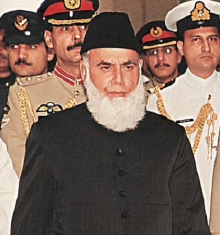

Gujranwala was founded by Gujjars in the eighteenth century however the exact origins of Gujranwala are unclear. Unlike the ancient nearby cities of Lahore, Sialkot, and Eminabad, Gujranwala is a relatively modern city. It may have been established as a village in the middle of the 16th century.Locals traditionally believe that Gujranwala's original name was Khanpur Sansi, though recent scholarship suggests that the village was possibly Serai Gujran instead - a village once located near what is now Gujranwala's Khiyali Gate that was mentioned by several sources during the 18th century invasion of Ahmad Shah Abdali (the great muslim ruler of Afghanistan region then).
Sikh Era:
In 1707, with the death of the last great Mughal emperor Aurangzeb, Mughal power began to rapidly weaken especially following Nader Shah's invasion in 1739 and then completely dissipated from the Punjab region due to the invasions of Ahmad Shah Abdali who raided Punjab many times between 1747 and 1772 causing much devastation and chaos.
Abdalis control over the region began to weaken in the latter part of the 18th century with the rise of the Sikh Misls (independent chieftainships usually consisting of the chief’s kinsmen) who overran Punjab.Charat Singh, ruler of the Sukerchakia Misl, established himself in a fort which he had built in the area of Gujranwala between 1756 and 1758.
Nuruddin, a Jammu-based Afghan (Pashtun) general, was ordered by Abdali to subdue the Sikhs but was driven back at Sialkot by Sikh soldiers led by Charat Singh. In 1761, Khwaja Abed Khan, Abdali’s governor in Lahore, tried to besiege Charat Singh's base in Gujranwala but the bid misfired. The Sikh misls rallied to his support by attacking Afghan officers wherever they were found.A fleeing Abed Khan was pursued by Sikh contingents led by the Ahluwalia misl into Lahore, where he was killed.Charat Singh made Gujranwala the capital of his misl in 1763.
In a 1774 battle waged in Jammu, Charat Singh of the Sukerchakia misl and Jhanda Singh of the powerful Bhangi misl, fighting on opposite sides, were both killed.Before his death, Charat Singh had become master of large and contiguous territories in the three doabs between the Indus and the Ravi. He was succeeded by his son Maha Singh who added to the lands that Charat Singh had not only captured but also capably administered.
In the Gujranwala area in the 1770s, the Jat Chathas of Wazirabad and Rajput Bhattis of Hafizabad (Muslims in both cases) offered ‘fierce resistance’ to the Sukerchakias, whose attack was aided by Sahib Singh of the Bhangi misl.[15] Describing the conflict, the (British) writer of the Gujranwala Gazetteer wrote that, besieged for weeks in his fortress, Ghulam Muhammad Chatha eventually surrendered after Maha Singh assured him safe passage to Mecca, but the promise was ‘basely broken’ when Ghulam Muhammad was shot and his fortress razed to the ground. Rasoolnagar (Prophet's city) which belonged to the Chathas was renamed Ramnagar (Ram's city) to humiliate the Muslims. The Gazetteer noted that the treacherous killing of Chatha and his resistance was remembered ‘in many a local ballad’ in Gujranwala.[15] The Bhattis of Hafizabad tehsil, who were Muslim Rajputs, did not cease their resistance to the Sukerchakias until 1801, when their leaders were killed and their possessions captured.[15] Some Bhattis fled to Jhang.
Ranjit Singh, Maha Singh's son and successor who would later go on to establish the Sikh Empire, was born in 1780 in Gujranwala's Purani Mandi market. Ranjit Singh maintained Gujranwala as his capital initially after rising to power in 1792. His most famous military commander Hari Singh Nalwa, who was also from Gujranwala, built a high mud wall around Gujranwala during this era and established the city's new grid street-plan that exists until the present day. Gujranwala remained Ranjit Singh's capital until he captured Lahore from the Durrani Afghans in 1799, at which point the capital was moved there, leading to the relative decline of Gujranwala in favour of Lahore.Jind Kaur, the last queen of Ranjit Singh and mother of Duleep Singh, was born in Gujranwala in 1817.
British Rule:
The area was captured by the British Empire in 1848, and rapidly developed thereafter. Gujranwala was incorporated as a municipality in 1867, and the city's Brandreth, Khiyali, and Lahori Gates built atop the site of Sikh-era gates were completed in 1869. A new clocktower was built in central Gujranwala to mark the city's centre in 1906.
Christian missionaries were brought to the region during British colonial rule, and Gujranwala became home to numerous churches and schools.[7] The city's first Presbyterian Church was established in 1875 in the Civil Lines area - a settlement built one mile north of the old city to house Gujranwala's European population. A theological seminary was established in 1877, and a Christian technical school in 1900.
The North-Western Railway connected Gujranwala with other cities in British India by rail in 1881.The major Sikh higher learning institution, Gujranwala Guru Nanak Khalsa College, was founded in Gujranwala in 1889, though it later shifted to Ludhiana. The nearby Khanki Headworks were completed in 1892 under British rule, and helped irrigate 3 million acres in the province. Gujranwala's population, according to the 1901 census of British India, was 29,224. The city continued to grow rapidly for the remainder of British rule.
Riots erupted in Gujranwala following the Jallianwala Bagh Massacre in Amritsar on April 1919. These were some of most violent riots to the British Massacre. Riots lead to the damage of the city's railway station and burning of the city's Tehsil Office, Clock Tower, Dak Bangla and city courts. Much of the city's historical record was burnt in the attacked offices. Protestors in the city, nearby villages, and a procession from Dhullay were fired upon with machine-guns mounted to low-flying planes, and subjected to aerial bombardment from The Royal Air Force under the control of Reginald Edward Harry Dyer.
According to the 1941 census, 269,528 out of the Gujranwala District's 912,234 residents were non-Muslim.54.30% of Gujranwala city residents were Muslims prior to Partition, though non-Muslims controlled much of the city's economy. Hindus and Sikhs together owned two-thirds of Gujranwala's properties. Sikhs were concentrated in the localities of Guru Nanak Pura, Guru Gobind Garh, and Dhullay Mohallah, while Hindus were dominant in Hakim Rai, Sheikhupura Gate area and Hari Singh Nalwa Bazaar. Muslims were concentrated in Rasul Pura, Islam Pura and Rehman Pura.
Modren Period:
The influx of Muslim refugees into Gujranwala drastically altered the city's form. By March 1948, over 300,000 refugees had been resettled in Gujranwala District. Many refugees found post-Partition Gujranwala lacking in opportunities, causing some to move south to Karachi. The refugee population mostly settled in localities that were mostly non-Muslim, like Gobindgarh, Baghbanpura and Nanakpura
Suburban districts were rapidly laid, including Satellite Town in 1950, which was designed mostly to house wealthy and upper middle-class refugees. D-Colony was built in 1956 for poorer Kashmiri refugees, and Model Town in the 1960s. The city experienced strong industrial growth during this period. In 1947, there were only 39 registered factories - a number which rose to 225 by 1961. The city's colonial era metal-working industry continued to grow, while the city became a centre of hosiery manufacturing that was run by refugees from Ludhiana. The city's jewelry-trade had been run by Hindus but came under control of refugees from Patiala. Gujranwala's economy continued to grow into the1970s and 1980s.
New development continues, such as the opening of a 5,774 foot long flyover that functions as an elevated urban expressway, as well as the nearby Sialkot International Airport which serves the entire Golden Triangle region, and is Pakistan's first privately owned commercial airport. Educations of higher learning have also been established in the city since independence. The Sialkot-Lahore Motorway, opened in 2020, passes near Gujranwala.
Geography:
Gujranwala sits at the heart of the Rechna Doab - a strip of land between the Chenab in the north, and Ravi River in the south. Gujranwala is also part of the Majha - a historical region of northern Punjab. The city was built upon the plains of Punjab, and the surrounding region is unbroken plain devoid of topographical diversity.Gujranwala is 226 metres (744 ft) above sea level, sharing borders with Ghakhar Mandi and several towns and villages. About 80 kilometres (50 mi) south is the provincial capital, Lahore. Sialkot and Gujrat lie to its north. Gujrat connects Gujranwala with Bhimber, Azad Kashmir, and Sialkot connects it with Jammu. About 160 kilometres (99 mi) southwest is Faisalabad. To its west are Hafizabad and Pindi Bhattian, which connect Gujranwala to Jhang, Chiniot and Sargodha.
Climate:
Gujranwala has a hot semi-arid climate (BSh),according to the Köppen-Geiger system, and changes throughout the year. During summer (June to September), the temperature reaches 36–42 °C (97–108 °F). The coolest months are usually November to February, when the temperature can drop to an average of 7 °C (45 °F). The highest-precipitation months are usually July and August when the monsoon reaches the Punjab. During the other months, the average rainfall is about 25 millimetres (0.98 in). October to May have little rainfall.Because of the suitable Climate, this region prduces fine quality rice, sugarcane and wheat.
Demography:
Gujranwala is the 5th largest city in Pakistan by population. Since the 2000s the population growth rate of Gujranwala has averaged at 3.0%. The population growth rate is projected to slow down to 2.51% by 2035.
Economy:
Gujranwala is the Pakistan's third largest centre of industrial production, after Karachi and Faisalabad. Gujranwala, along with the nearby industrial cities of Sialkot and Gujrat City, form what is sometimes referred to as the Golden Triangle in reference to their relative prosperity and export-oriented industrial base.The city's industries employ up to 500,000 people, while the city's GDP makes up 5% of Pakistan's overall economy.
An estimated 6,500 small and medium enterprises, 25,000 cottage units, and some large factories, are located in and around the city as of 2002 and are engaged in the manufacture of a wide variety of goods. The city is the centre for manufacture and export of sanitary fittings and wares in Pakistan, with over 200 producers based in Gujranwala. More than 60 producers of auto parts are found in the city. The city is well known as a centre formanufacturing electric fans with 150 small and medium
enterprises in Gujranwala tied to the electric fan industry.[36] The city is Pakistan's third largest centre for iron and steel manufacturinge- reflecting Gujranwala's historic association with metalworking since the migration of the Lohar clan of blacksmiths to the city during the colonial era. The city has been a centre of hosiery-manfuacture since the migration of refugees primarily from Ludhiana in 1947.
Textiles, apparel, yarn, and other textile goods are also produced in Gujranwala. Other manufacturing based in the city include rice, plastic, cutlery, coolers and heaters, agricultural tools and equipment, carpets, glass goods, surgical equipment, leather products, and machinery for military uses, domestic appliances, motorcycles, and food products.This City also hosts the highest concentration of heavy industry in Punjab.he rural regions surrounding Gujranwala are heavily engaged in the production
of wheat and are yield more wheat per acre than the national average. Gujranwala District is also the most productive region for rice-growing in Punjab.
In 2010, Gujranwala was rated number 6 out of Pakistan's top 13 cities in order of ease of doing business by the World Bank, and was ranked the second-best in Pakistan for construction permits.Pakistan's electric shortages of the 2010s severely stymied the city's growth. Industrial units in the city suffered an average of 2872 hours per year in Gujranwala in 2012. By the end of 2017, the supply of electricity had drastically improved with augmented electric generation as a result of new power-stations coming online. Improved supplies of electricity contributed to the country's double-digit rise in exports in the second half of 2017. This brilliant city is also home of the one of the top 10 biggest companies in the world the Master Group of Companies.Hosting Asia's largest Scenetary market place.
Gurdwara Rori Sahib is the sacred shrine which marks the site where, according to tradition, Guru Nanak after the destruction of the town had stayed with Bhai Lalo. Here the Guru had to sit and lie on a hard bed of pebbles (small stones) (ror-ree in Punjabi) as alluded to in Bhai Gurdas Varan.When the armies of Babar entered Punjab in 1521, Guru Nanak Dev was present in Gujranwala. At the time of capture of Gujranwala, many locals were arrested, among whom was Guru Nanak Dev Ji. At the time of the arrest, Guru Nanak was sitting on the pebbles and was busy in his prayers. The Gurdwara stands at the place of the pebbles.An imposing Gurdwara has been built over the place. A large pond and
other buildings make it more graceful. A large estate worth Rs.5000 per annum and 9 squares of agricultural land is endowed to the Gurdwara from the era of Maharaja Ranjit Singh. Vaisakhi and Kattak Puranmashi festivals used to be held in the past but only Vaisakhi festival is held now where people from Gujranwala and its adjoining areas participate
with fanfare. This was the premier gurdwara of the town. Its central building is a three-storey imposing structure of cut brick work, which is topped with three chhatri-like structures covered with a large central gumbaz (dome) with smaller chhatris (dome-shaped pavilions) on either side. A rectangular hall adjoins it on the left side of the entry. A large sarovar, surrounded with low walls on two of its sides is set askew to the right of the central entry tower. At the rear of the complex there is a room topped with a particularly exquisite ribbed white lotus dome with a circumambulatory verandah. This room covers the pebbled area on which Guru Nanak was arrested.
Eminabad (town where Gurdwara located) known for its week-long Baisakhi fair which included largely attended Congregational gatherings of the Sikhs in Gurudwara Rori Sahib as well as the usual fun and a cattle fair.A huge number of Sikhs gathers here from all over the world to celebrate there cultural event Baisakhi.
Haveli Ranjit Singh:
Mahraja Ranjit Singh also known as ‘Lion of Punjab’, is may be the most prominent Punjabi ruler who ruled over Punjab. According to Britannica:
“Maharaja Ranjit Singh was the first Indian in a millennium to turn the tide of invasion back into the homelands of the traditional conquerors of India, the Pashtuns (Afghans), and he thus became known as the Lion of the Punjab. At their height, his domains extended from the Khyber Pass in the northwest to the Sutlej River in the east and from the Kashmir region at the northern limit of the Indian subcontinent southward to the Thar (Great Indian) Desert. Although he was uneducated, he was a shrewd judge of people and events. His reign started in 1799 when he captured Lahore and ended in 1839 when he died. In little more than six years after his death, the Sikh state he had created collapsed because of the internecine strife of rival chiefs.”
Ranjit Singh, the great leader of the Sikh Empire, was born to Mahan Singh (1756-1792) in this stately haveli on November 13, 1780. His father, was the leader of the Sukerchakia Misl, one of many small principalities that arose in Punjab as Mughal rule faltered. Of necessity, the haveli reflected the wealth and eminence of Mahan Singh’s position, and his authority to rule, though the haveli was less ostentatious than many later examples such as the Omar Hayat mahal in Chiniot or the Nau Nihal Singh haveli, built by one of Ranjit Singh’s descendants.
Darzian Wali Kothi:
Darziyan Vali Kothi is one of the oldest building in Gujranwala constructed at British time.
A tailor’s mansion (Darziyan Vali Kothi) on College Road in the heart of the city, completed in 1927. According to old tales, the owner of this mansion was a tailor in the British army back in 19 Century and made uniforms for the army by that times. The British were very pleased with his services and used to give him many prizes, one of which was this Historical Building. It is the only building in Gujranwala built on a Gothic structure.
The Darzi Wali Kothi an Historical Place in Gujranwala is located in Muhalla Noor Bawa, College road Gujranwala. Ownership of the building has been controversial since the partition of Pakistan. There are a lot of stories and tales about Darziyan Vali Kothi Gujranwala. Some people even say that there was a witch in this building.
Sheran Wala Bagh:
>
The Sheranwala Bagh Baradari is a garden pavilion reportedly built by Mahan Singh, the father of the famous Maharaja Ranjit Singh. It is a classic baradari, which literally means '12 doors' in reference to the three open bays on each side of the structure. Some sources suggest it was built in 1788 at the behest of Sardar Mahan Singh, but it may have been constructed concurrently with the Mahan Singh Samadhi (tomb) in the 1830s.
The site was heavily damaged (possibly destroyed) in 1992 during riots sparked by the wanton destruction of the Babri Mosque by in Ayodhya, India (probably, the baradari was mistaken for a Hindu monument). It stood in ruins for about 20 years until the Qila Deedar Singh municipal authorities sponsored restoration work in 2012, costing 3 million rupees (about $30,000 USD). It has now been faithfully restored (or recreated) by architect Mureed Hussain who headed the restoration work and consulted plans and drawings from the archaeological department to ensure an accurate reconstruction.
There is a garden attached with the building and now this garden have became most famous Akhara (place for Wrestlers training). As we all know this Land has produced some of the world class Wrestlers. Recently know Inam Butt and Talha Talib also belongs to this city and have trained in same Bagh. It won't be wrong if we say there is something in this soil or the blood of the natives that makes them so passionate and strong.
Ghanta Ghar:
>
Ghanta Ghar, Gujranwala is one of the oldest monuments still standing from the period of the British Raj. It was built by the British government in 1901-1906, when they ruled most of the South Asia during the nineteenth century.Situated in the heart of city, among the crowd of thousand of peeps this historic clock tower is present ,in the middle of business hub you can witness its beauty.As this monument is situated in the middle of the city its is surrounded by crowded colorfull bazars that adds to its beauty. This reflects the tradition, Culture and live of local natives in the old city of Gujranwala.
Rail Bazar:
>
If you are ashopping lover then Gujranwala is perfect place for you, because this city is provides you the wide variety of fabrics and Garments on the lowest prices in the region that's why many people from surrounding cities visit this city jsut for shopping. There are not many shopping malls cuz there yo see ond of the oldest bazars in the country and you i thing really interesting is! Bazars in City are so huge that is place contains highest concentration of Fabric and Graments Shops anywhere in the entire country.
Tomri Mandir:
>
Baddoki Gosaian is one of the largest and most historically significant villages of the Gujranwala District. It was a home to Hindus (mostly belonging to the Gosain community), Sikhs and Muslims before the Partition of India. In 1947, several Hindu and Sikh families migrated from Baddoki Gosaian to India and similarly from India several Muslim families migrated to the village. Migrant families still use the homes and lands of those who emigrated from the village.
Baddoki Gosaian is the birthplace of Sidh Baba Sai Das, founder of the Gosain/Goswami community contemporary to Baba Nanak Dev. It had a big square shaped tank with a temple in the center with a tree of berries.
It is Shiv Mandir and Mandir name is Tomri Sahib its built by Sikh,s Not by Hindu .Tomri Sahib is large complex of Holly pont and side rooms and 2 ponds. For entrance 10 stairs around the pond and stairs are still there . Mandir have to many side buildings like dharamshala and living rooms and Sikh Samadhi and other features remains still there . Like other temple or Mandir Banyan tree also close to the Mandir .
Tomri sahib Mandir have no any primary sources to know who built this but one thing is very clear Tomri Sahib not name in Hindus but in Sahib mostly use in Sikh names with saints or Guru or any Baba ji . It is different then other Mandirs because no Mandir have large pond in this area and walk way built on beautiful 8 arches and all arches are still there . . All places and Mandir construct by small bricks and some work of white marble.
Citi Housing:
>
Gujranwala, is known for giving top wrestlers to the country, is a city based in Punjab and is the 5th most populous city of Pakistan. It is one of the fastest growing cities of Pakistan and an important industrial hub. Industrialization has created a strong middle class contributing to its prosperity and progress. According to a GCCI estimate, 5,000 small and medium enterprises and 16,000 cottage units, along with a few large factories, are located in the city.
In this incredible city Citi Housing Pakistan is providing the true concept of elegant living in a gated community where aesthetics, convenience and practicality are all merged to create the most modern, world class housing project. Offering access from both the canal road and G.T road directly, Citi Housing has been planned in compliance to all the latest international town planning and engineering standards. With an extensive network of winding roads, uninterrupted underground electric supply, international standard school system, lush green parks, and a zoo along the canal bank for the entertainment of your children, Mosque and a fully equipped hospital.
As expected Citi Housing Gujranwala host all the luxries off life including Opera 3D Cinema, Amusement Parks, Shoping Malls, Zoo and World Class Resturants.Citi Housing also has seprate residencal blocks for Overseas Paksitani that makes it distinct from other housing authorities.
Nishan-e-Manzil:
>
Nishan-e-Manzil Gujranwala is a famous land mark and a well known point of interest of this city which is visited by so many visitors on daily basis. This place is very beautiful, old and famous among the tourist who come here from across the world. This beautiful monument is situated in Gujranwala Cantt.There is a small lake where you can enjoy boating, fishing and a sun bath. There is also a beatiful animal parl where you can find variety of birds and different zoo animals. There is also a huge library nearby and a sports complex, at the end of the day you can have a delicious dinner enjoying beautiful evening view here in short if you are visiting Gujranwala then Nishan-e-Manzil is a must go place for and you'll have memorable time here.
The Mall of Gujranwala:
>
The versatile Super Asia Group’s latest venture, Mall of Gujranwala is an example of the excellence and competence of the group. A one-of-its-kind project in the city of Gujranwala, Mall of Gujranwala is being built on a scale that the city has not yet experienced. It is set to revolutionise the city’s property market. This project is a one-stop shop for all leisure activities. In collaboration with renowned and upscale brands, Mall of Gujranwala is all set to provide you services and entertainment like nowhere else.
This not the End of the List there is lot more to see in this incredible city.Remeber I have just mentioned top 10 famous places not all, So when ever you visit Gujranwala first visit these places and then try to explore more cuz it's not the END!
Famous People
This fertile soil of gujranwala has a homour to produce so of the great politician, athletes, worrior, artists and scholars. All of hem proved themselve the best in their respective fields. I'm not gon'a mention all of them cuz the list is endless and I have to wind it up. So here are some of the son/daughter of the soil who entertained us make us proud all across the world, those are the pride of the Nation the true face of our country.
Muhammad Rafiq Tarar:

Muhammad Rafiq Tarar is a Pakistani politician and a jurist who served as the ninth President of Pakistan from January 1998 until his resignation in June 2001, and prior to that as a senator from Punjab in 1997. Before entering politics, Tarar served as senior justice of the Supreme Court of Pakistan from 1991 to 1994 and as the 28th Chief Justice of Lahore High Court from 1989 to 1991.Tarar was born in Gujranwala, and graduated with LLB from University of the Punjab in 1951, before starting practice as a lawyer in Lahore High Court the following year. In 1966, he pursued a career as a jurist. Tarar later served as a justice in Pakistan's highest courts. After his retirement at 65, he started a political career as a legal advisor to Nawaz Sharif. Tarar became a senator from Punjab in 1997 and the same year nominated as presidential candidate by PML-N,but his nomination paper rejected by the Acting Chief Election Commissioner. Barrister Ijaz Husain Batalvi assisted by M. A. Zafar and Akhtar Aly Kureshy Advocate, challenged his rejection in Lahore High Court and the Full Bench set aside the rejection order of Election Commission and he was elected as President of Pakistan in the presidential election by a margin of 374 out of 457 votes of the Electoral College.
Sohail Ahmad:
Sohail Ahmad is a Pakistani writer, producer, comedian, and stage and TV actor.Sohail was born on May 1, 1963, in Satellite Town Gujranwala to Mian Muhammad Akram.
The main reason for his fame is the comedy stage dramas produced in Lahore. Sohail Ahmad Azizi is famous for his eloquent dialogues. He is outspoken critics of women’s dance in stage plays. Although fans of stage dramas know Sohail as a comedian, most of his work on TV is of serious nature, especially in Pakistani television, where he has appeared mostly in serious and negative roles. He has experimented with a variety of roles, from a mercenary to a feudal lord. His role as Azizi in the Dunya News program “Hasb e Haal” became very popular.Sohail Ahmed has been associated with theater for a long time, and he provided a lot of entertainment to the people through his unparalleled art. However, his characteristic feature was that whenever he performed a stage play, there must have been some message in it, and the shows were free from obscenity and could be easily seen by the family members. A great example of this is ‘Fiqa in America.'About five years ago in 2015, Sohail launched a vigorous campaign to end immorality on stage dramas. Fakhri Ahmed and Ajmal Khan are those artists whose work has always impressed Sohail. He was inspired to become an actor by Ajmal Khan for playing the role of Kedo in the film ‘Heer Ranjha’. He is convinced of the laughter in which some bitter truth is hidden. He has so far won the Tamgha E Imtiaz, and the Pride of Performance in addition to these, he has won ten Graduate, six Bolan Awards, a TV Lifetime Achievement Award, and two Best TV Actor awards.
Saba Qamar:
Sabahat Qamar Zamanborn 5 April 1984 in Hayderabad, known professionally as Saba Qamar, is a Pakistani actress and television presenter. After death of her father in Early age she spent all her chilhood in Gujranwala One of Pakistan's most popular and highest-paid celebrities, her roles have been credited as a significant departure from the traditional portrayal of women in Urdu television. Her accolades include four Lux Style Awards, and a Filmfare Award nomination. The Government of Pakistan honoured her Tamgha-e-Imtiaz in 2012, and the Pride of Performance in 2016.Qamar first received positive media attention for the role of Fatima Jinnah in the historical drama Jinnah Ke Naam (2007), and this breakthrough was followed with further success in several television series, including the pre-partition drama Dastaan, the melodrama Uraan (both 2010), the romantic dramas Maat, Jo Chale To Jaan Se Guzar Gaye and Pani Jaisa Piyar (all 2011). She established herself for her critically acclaimed performances in the socio drama Thakan (2012), the thriller drama Sannata, the revenge drama Ullu Baraye Farokht Nahi, the romantic drama Bunty I Love You (all 2013), the family drama Digest Writer (2014), the crime thriller Sangat (2015), and the Show business-based dramas Mein Sitara and Besharam (both 2016), receiving Best Actress awards and nominations for each of them. Her career prospect advanced with the acclaimed biographical film Manto (2015), the romantic comedy Lahore Se Aagey (2016), and the educational drama Hindi Medium (2017). The latter rank among the highest-grossing Indian films of all time and garnered her a Filmfare Award for Best Actress nomination. Qamar continued to draw praise for portraying Fouzia Azeem and Noor Jehan in the 2017 biographical dramas Baaghi and Main Manto, and a strong woman, fighting for her friend's attempted rape and murder in the 2019 courtroom drama Cheekh. The first of these earned her a Lux Style Award for Best Television Actress.
Atif Aslam:
Atif Aslam born 12 March 1983 in Wazirabad (Gujranwala), is a Pakistani playback singer, song-writer, composer and an actor. Best know for his super-hit songs in the Pakistani and Indian film industries. He has recorded numerous chart-topping songs in both Pakistan and India and is known for his vocal belting technique.He predominantly sings in Urdu and Hindi, but has also sung in Punjabi, Bengali and Pashto. With a number of successful chart-topping songs, he is often considered one of the best playback singers in the Indian and Pakistani music industries of all times. In 2008, Aslam received the Tamgha-e-Imtiaz, the fourth-highest civilian honour award from the Pakistani government. He is also a recipient of a number of Lux Style Awards. Aslam made his acting debut in 2011 with the Urdu social drama film Bol. In 2019, he was awarded a star in the Dubai Walk of Fame after his nomination for the best singer in Pakistan. He was also featured in the Forbes Asia's 100 Digital Stars, published in December, 2020.Aslam has an extensively large following at home in Pakistan as well as in neighbouring countries of India and Bangladesh.Aslam has stated that he had no initial formal training in music, and was disinterested in the thought of pursuing a musical career over one in cricket. It was not until his college days that he began to actively take part in various musical competitions and eventually was encouraged by his friends to establish himself in the music industry.
Imran Khan:
Imran Khan (born 28 May 1984) is a Dutch-Pakistani singer and songwriter with hometown here in Gujranwala,Punjab. He became known in 2007 after his first single "Ni Nachleh" produced by Eren E. Khan was signed to Prestige Records in late 2007, and released the single "Ni Nachleh" on the label. His second single, "Amplifier" produced by Eren E was released on 13 July 2009, and later several others. His song "Satisfya" is his most viewed video till date for over 600 million+ views. His debut 15-track album Unforgettable was released on 27 July 2009 via Prestige Records, produced by Eren E and Hakan Ozan.Khan made his Bollywood debut as a singer for the Hindi film Tevar, which was released on 9 January 2015. As of 2016 the song has over more than 2 million hits.Khan released a single titled "Imaginary" on 8 June 2015, produced by Eren E. The single was released on his own record label, IK Records. Khan shot the video with David Zennie in downtown Los Angeles. "Imaginary"'s official music video received 6 million views within a month of its release and currently 70 million+ views on YouTube. Khan went on and yet came out with another song called "Hattrick" which has 2 million views in a month and currently 15 million+ views.In 2017, Khan released a music video called "Morocco" by, Twin N Twice who signed up with Khan's label record, IK RECORDS.Imran Khan Won "Best Album" at the 2010 Brit Asia TV Music Awards for Unforgettable.Nominated for four awards at the 2010 UK Asian Music Awards: "Best Album", "Best Video" for "Amplifier", "Best Male Act" and "Best Desi Act", winning "Best Desi Act".Won "Best Urban Asian Single" at the 2013 Brit Asia TV Music Awards for "Satisfya".
Moalana Zafar Ali Khan:
Zafar Ali also known as Maulana Zafar Ali Khan, was a Pakistani writer, poet, translator and a journalist who played an important role in the Pakistan Movement against the British Raj. Apart from Islamic religious sciences, he was well-versed in the latest theories of economics, sociology and politics, and for his erudition as well as methods, is generally considered to be "the father of Urdu journalism."Zafar was born into a Punjabi Janjua family in Wazirabad, British India. He received his early education at Mission High School, Wazirabad, Gujranwala District. And did matriculated (10th grade) from Patiala, and passed his intermediate (12th grade) from the Aligarh College. Next, he worked in the postal department of the state of Jammu and Kashmir, the same place where his father worked, but resigned over a row with his seniors.He rejoined Aligarh College and gained his BA degree from there.He chose to write in Urdu, instead of his mother tongue Punjabi. Khan's interest in poetry began in his childhood. His poems have religious and political sentiment. He was specially versed in impromptu compositions. His poetical output includes Baharistan, Nigaristan, and Chamanistan. His other works are Marka-e-Mazhab-o-Science, Ghalba-e-Rum, Sayr-e-Zulmet and an opera Jang-e-Roos-o-Japan.He died on 27 November 1956, Wazirabad, Punjab. His funeral prayer was led by his companion Mohammad Abdul Ghafoor Hazarvi.
General Qamar Javed Bajwa:
General Qamar Javed Bajwa is a Pakistani military officer who is the 10th and current Chief of the Army Staff of Pakistan Army since 29 November 2016.Born in Karachi, into a Punjabi JUTT family, Bajwa was educated at the F.G. Sir Syed College and Gordon College in Rawalpindi before joining the Pakistan Military Academy in 1978.His family hails from Ghakhar Mandi, Punjab. His father, Muhammad Iqbal Bajwa, was an officer of Pakistan Army who died while in service in 1967 in Quetta, Balochistan, Pakistan. Bajwa was seven years old when his father died and he was the youngest of five siblings. He and his siblings were raised by their mother, who died in September 2013. Bajwa is a graduate of the Canadian Army Command and Staff College and the Naval Postgraduate School in Monterey, California, United States.After joining the Pakistan Army in 1978, Bajwa who was enrolled at the Pakistan Military Academy (PMA) in Kakul, passed out with the class of 62nd PMA Long Course and gained commission as 2nd-Lt., on 24 October 1980 in the 16th Baloch Regiment at the Sialkot Cantonment – the same unit that his father commanded.In 1988, Major Bajwa briefly served in the 5th Northern Light Infantry in Azad Kashmir.In addition, Lieutenant-Colonel Bajwa served in the X Corps, stationed in Rawalpindi, as a Staff Officer.Upon promotion as one-star rank army general, Brigadier Bajwa served as the Chief of Staff (COS) at the X Corps.In 2003, Brig. Bajwacommanded the Pakistan Armed Forces-Africa Command, attached to the UN peacekeeping mission in D. R. Congo.
After being promoted to the two-star rank in May 2009, Major-General Bajwa took over the command of the Force Command Northern Areas division as its GOC, stationed in Gilgit-Baltistan, Pakistan.In August 2011, he was honored with the Hilal-i-Imtiaz (Military), and posted as an instructor at the School of Infantry and Tactics, Quetta.On 14 August 2013, Maj-Gen. Bajwa was promoted to three-star rank and posted as field commander of the X Corps, stationed in Rawalpindi.He was appointed as Grade-I officer during his tenure as field commander of the X Corps.[20] The appointment was commented in the news media that noted that Lt-Gen. Bajwa had been posted in X Corps thrice, which is the army's most important and largest corps, which has experience of keeping control over the situation in Kashmir.On 22 September 2015, Lt-Gen. Bajwa was posted in the General Headquarters when he was appointed as the Inspector-General of the Training and Evaluation (IGT&E). There he was a Principal Staff Officer to the then-Chief of Army Staff, General Raheel Sharif.In 2016, General Raheel Sharif dismissed rumours of seeking the extension for his term.Initially, the race for the appointment for the army chief was rumored between Lt-Gen. Zubair Hayat and Lt-Gen. Javed Ramday who was close to the first family.However, Prime Minister Nawaz Sharif announced to appoint the-then senior most army general, Lt-Gen. Zubair Hayat as the Chairman Joint Chiefs of Staff Committee.On 29 November 2016, Prime Minister Sharif eventually announced to appoint General Bajwa - the fourth by seniority, as the Chief of Army Staff, superseding two generals who were senior than him. His strong pro-democracy stance and views may have influenced his appointment as the army chief as noted by the media pundits. The Reuters reported that Prime Minister Sharif picked Bajwa because of his low-key style. He was also noted as the fourth oldest Chief of Army Staff.In December 2016, he was awarded the Nishan-e-Imtiaz.
Under the command of Gen. Bajwa, the nationwide counter-terrorism Operation Radd-ul-Fasaad and Khyber-4 were launched in February 2017 and July 2017, respectively
Maharaja Ranjit Singh
Maharaja Ranjit Singh popularly known as Sher-e-Punjab or "the Lion Of Punjab."was the first Maharaja of the Sikh Empire, which ruled the northwest Indian subcontinent in the early half of the 19th century.Ranjit Singh was born on 13 November 1780, to Maha Singh Sukerchakia and Raj Kaur – the daughter of Raja Gajpat Singh of Jind, in Gujranwala, in the Majha region of Punjab.He was short in stature, never schooled, and did not learn to read or write anything beyond the Gurmukhi alphabet, however, he was trained at home in horse riding, musketry and other martial arts.He fought his first battle alongside his father at age 10. After his father died, he fought several wars to expel the Afghans in his teenage years and was proclaimed as the "Maharaja of Punjab" at age 21.His empire grew in the Punjab region under his leadership through 1839.Ranjit Singh successfully absorbed and united the Sikh misls and took over other local kingdoms to create the Sikh Empire. He repeatedly defeated invasions by outside armies, particularly those arriving from Afghanistan, and established friendly relations with the British.Ranjit Singh's reign introduced reforms, modernisation, investment into infrastructure and general prosperity. His Khalsa army and government included Sikhs, Hindus, Muslims and Europeans. His legacy includes a period of Sikh cultural and artistic renaissance, including the rebuilding of the Harmandir Sahib in Amritsar as well as other major gurudwaras, including Takht Sri Patna Sahib, Bihar and Hazur Sahib Nanded, Maharashtra under his sponsorship. Maharaja Ranjit Singh was succeeded by his son Kharak Singh.
Imran Nazir:
Imran Nazir (born 16 December 1981 Gujranwala, Punjab, Pakistan) is a Pakistani former cricketer who played for the Pakistan national cricket team between 1999 and 2012 primarily an hard hitting opening batsman.Nazir made his debut in Test cricket in March 1999 against Sri Lanka at Lahore in Pakistan, and his One Day International debut against the same opposition at Visakhapatnam in India. He played in 8 Test matches between 1999–2002 and secured a spot in the Pakistan squad since 2002. He also played in One Day International arena, but he could never cement his place in the squad. The emergence of several Pakistan opening batsmen such as Imran Farhat, Mohammad Hafeez, Yasir Hameed, Taufeeq Umar, and Salman Butt kept him out of the national side. However, he displayed excellent cricketing performances in first-class cricket.Nazir was named in Pakistan's squad for the 2007 World Cup. He scored 160 runs against Zimbabwe in Pakistan's last match during the 2007 Cricket World Cup, after being knocked out by Ireland.
It was the second highest score by a Pakistani batsman and the eighth highest score by any batsman in World Cup history and his 8 sixes equalled the World Cup record of Australian batsman, Ricky Ponting.Nazir was recalled to the Pakistan team in September 2012 for the Twenty20 series against Australia and the following ICC World Twenty20 which was held in Sri Lanka. He scored 153 runs in 6 matches with a reasonable average of 25.50 and with a marvelous strike rate of 150.00 which included a match winning innings of 72 against Bangladesh. Nazir has not played international cricket since October 2012.
Hassan Ali:
Hassan Ali (born 2 July 1994, Gujranwala, Punjab) is a Pakistani cricketer.He made his first-class debut for Sialkot in October 2013. He made his international debut for Pakistan in August 2016 in a One Day International (ODI) match. He became the quickest bowler for Pakistan to take 50 wickets in ODIs.In April 2017, Ali was added to Pakistan's Test squad for their series against the West Indies. He made his Test debut for Pakistan in the third Test against the West Indies on 10 May 2017.In June 2017, Ali was named in Pakistan's squad for the 2017 ICC Champions Trophy. Pakistan won the tournament for the first time, beating arch-rivals India by 180 runs. Ali named as the player of the tournament after taking 13 wickets, and also won the Golden Ball.In 2017, Ali took the most wickets in ODIs by any bowler, with 45 dismissals and was named the Pakistan Cricket Board's Emerging Player of the Year. He finished 2017 as the top ranked fast bowler in the ICC Player Rankings in ODI cricket.In September 2019, Ali suffered from a back injury which took seven weeks of rehab and which was immediately followed by a rib fracture taking him out of the game for many weeks as well. He would eventually regain his fitness in late 2020.In January 2021, Ali, after two years, was recalled to Pakistan's Test squad for their home series against South Africa. On 1 May 2021, he took his fourth five-wicket haul in the first Test against Zimbabwe, and was also named the man of the match for taking nine wickets in the match. He also took his 50th Test wicket in the same match. He was also named the player of the series against Zimbabwe in 2021 on his performance of 14 wickets in the two-Test series.
Nida Dar:
Nida Rashid Dar (born 2 January 1987, Gujranwala) is an international cricketer from Pakistan. She is a right-handed batsman and a right-arm off break bowler. She is the first Pakistani cricketer to take 100 wickets in T20I cricket.Dar made her one-day international debut against Ireland on 6 October 2010 in Potchefstroom, South Africa.In October 2018, she was named in Pakistan's squad for the 2018 ICC Women's World Twenty20 tournament in the West Indies. Following the conclusion of the tournament, she was named as the standout player in the team by the International Cricket Council (ICC). In January 2020, she was named in Pakistan's squad for the 2020 ICC Women's T20 World Cup in Australia. In Pakistan's match against England, she played in her 100th WT20I match.In June 2021, Dar was named in the Pakistan's squad across all formats for their away series against the West Indies. In the opening match of the T20I series, she picked up her 100th wicket by dismissing Deandra Dottin in the 10th over of the first innings, and became the first bowler, male or female to take 100 wickets in T20I cricket for Pakistan.Dar's nickname,"Lady Boom Boom" is an allusion to her batting firepower.
She made her Women's Twenty20 International (WT20I) debut on 6 May 2010 against Sri Lanka at Basseterre, St. Kitts.
On 6 June 2018, during the 2018 Women's Twenty20 Asia Cup match against Sri Lanka, she took her first five-wicket haul and the best bowling figures by a Pakistan woman in WT20Is.
Muhammad Inam Butt:
Muhammad Inam Butt is a Pakistani professional wrestler from the land of Wrestlers "Gujranwala". He won the country's second gold medal at the 2010 Commonwealth Games, Bronze medal at the 2014 Asian beach Games, gold medal at the 2016 South Asian Games, gold medal at the 2016 Asian Beach Games, Silver medal at the 2016 Commonwealth Wrestling Championship, gold medal at the 2017 World Beach Wrestling Championships, gold medal at the 2018 World Beach Wrestling Championships, Silver medal at the 2017 Commonwealth Wrestling Championship.He has received pride of performance award on 23 March 2019.Inam participated in the 84 kg class freestyle at the 2010 Commonwealth Games in New Delhi, India. He won the gold medal in freestyle wrestling against his Indian opponent, Anuj Kumar on points (3-1).Inam participated in the 86 kg class freestyle at the 2016 12th South Asian Games in Guwahati, India. He won the gold medal in freestyle wrestling against his Indian opponent, Gopal Yaduv on points (12-4).Inam also participated in 90kg class
Beach wrestling|freestyle at the 2016 5th Beach Asian Games in Danang, Vietnam. He won the gold medal in freestyle wrestling against his Iranian opponent, on points (3-0).
Inam also participated in the 86 kg class freestyle at the 2016 Common Wealth Wrestling Championship in Singapore. He won the Silver medal in freestyle wrestling there.Inam bagged the gold medal in 86 kg category at the 2018 Commonwealth Games, Gold Coast by beating his opponent Nigeria's Bibo by 3:0.
Talha Talib:
Talha Talib(born 3 October 1999) is a Pakistani weightlifter. He competed at the 2018 Commonwealth Games and won a bronze medal in the 62 kg category, lifting a total of 283 kg at the age of 18. He wasborn in Gujranwala. He is the Pakistani national champion in the 62 kg category. He set a new record at the games in snatch as he lifted 132 kg in the third attempt with 127 kg and 130 kg in the first two attempts, respectively. He was also a gold medalist at the 2016 Commonwealth Youth Weightlifting Championships in Penang. He lifted 258 kg to clinch the gold.He is currently the top ranked weightlifter of Pakistan.Talib began training at age eight in Gujranwala, Pakistan. His father Muhammad Islam Natiq was a national weightlifting coach for Pakistan, who introduced him to the sport. He passed his matriculation from Quaid-e-Azam Divisional Public School and College Gujranwala. Then he studied computer sciences at Superior College, Gujranwala.Talha Talib won Silver medal in 56 Kg category of Samoa Commonwealth Youth Games 2015.At the 2016 Commonwealth Youth Championships in Penang, he was named Best Weightlifter.
In the Asian Championship 2020, Talha won a bronze medal by lifting 148kg in snatch in 67kg event.At the 2020 Summer Olympics, Talib finished fifth in the men's 67 kg event. Talib's lift of 151kg in Snatch category was the second-best of the round. His overall tally of 320 kg was just 2 kg shy of the bronze medal. This young blood had performed brilliantly on several International Platform presenting Green Falg without any Government Support. May Allah grant him enough power and courage to make nation proud in future Insha'Allah.
 Nuruddin, a Jammu-based Afghan (Pashtun) general, was ordered by Abdali to subdue the Sikhs but was driven back at Sialkot by Sikh soldiers led by Charat Singh. In 1761, Khwaja Abed Khan, Abdali’s governor in Lahore, tried to besiege Charat Singh's base in Gujranwala but the bid misfired. The Sikh misls rallied to his support by attacking Afghan officers wherever they were found.A fleeing Abed Khan was pursued by Sikh contingents led by the Ahluwalia misl into Lahore, where he was killed.Charat Singh made Gujranwala the capital of his misl in 1763.
In a 1774 battle waged in Jammu, Charat Singh of the Sukerchakia misl and Jhanda Singh of the powerful Bhangi misl, fighting on opposite sides, were both killed.Before his death, Charat Singh had become master of large and contiguous territories in the three doabs between the Indus and the Ravi. He was succeeded by his son Maha Singh who added to the lands that Charat Singh had not only captured but also capably administered.
In the Gujranwala area in the 1770s, the Jat Chathas of Wazirabad and Rajput Bhattis of Hafizabad (Muslims in both cases) offered ‘fierce resistance’ to the Sukerchakias, whose attack was aided by Sahib Singh of the Bhangi misl.[15] Describing the conflict, the (British) writer of the Gujranwala Gazetteer wrote that, besieged for weeks in his fortress, Ghulam Muhammad Chatha eventually surrendered after Maha Singh assured him safe passage to Mecca, but the promise was ‘basely broken’ when Ghulam Muhammad was shot and his fortress razed to the ground. Rasoolnagar (Prophet's city) which belonged to the Chathas was renamed Ramnagar (Ram's city) to humiliate the Muslims. The Gazetteer noted that the treacherous killing of Chatha and his resistance was remembered ‘in many a local ballad’ in Gujranwala.[15] The Bhattis of Hafizabad tehsil, who were Muslim Rajputs, did not cease their resistance to the Sukerchakias until 1801, when their leaders were killed and their possessions captured.[15] Some Bhattis fled to Jhang.
Nuruddin, a Jammu-based Afghan (Pashtun) general, was ordered by Abdali to subdue the Sikhs but was driven back at Sialkot by Sikh soldiers led by Charat Singh. In 1761, Khwaja Abed Khan, Abdali’s governor in Lahore, tried to besiege Charat Singh's base in Gujranwala but the bid misfired. The Sikh misls rallied to his support by attacking Afghan officers wherever they were found.A fleeing Abed Khan was pursued by Sikh contingents led by the Ahluwalia misl into Lahore, where he was killed.Charat Singh made Gujranwala the capital of his misl in 1763.
In a 1774 battle waged in Jammu, Charat Singh of the Sukerchakia misl and Jhanda Singh of the powerful Bhangi misl, fighting on opposite sides, were both killed.Before his death, Charat Singh had become master of large and contiguous territories in the three doabs between the Indus and the Ravi. He was succeeded by his son Maha Singh who added to the lands that Charat Singh had not only captured but also capably administered.
In the Gujranwala area in the 1770s, the Jat Chathas of Wazirabad and Rajput Bhattis of Hafizabad (Muslims in both cases) offered ‘fierce resistance’ to the Sukerchakias, whose attack was aided by Sahib Singh of the Bhangi misl.[15] Describing the conflict, the (British) writer of the Gujranwala Gazetteer wrote that, besieged for weeks in his fortress, Ghulam Muhammad Chatha eventually surrendered after Maha Singh assured him safe passage to Mecca, but the promise was ‘basely broken’ when Ghulam Muhammad was shot and his fortress razed to the ground. Rasoolnagar (Prophet's city) which belonged to the Chathas was renamed Ramnagar (Ram's city) to humiliate the Muslims. The Gazetteer noted that the treacherous killing of Chatha and his resistance was remembered ‘in many a local ballad’ in Gujranwala.[15] The Bhattis of Hafizabad tehsil, who were Muslim Rajputs, did not cease their resistance to the Sukerchakias until 1801, when their leaders were killed and their possessions captured.[15] Some Bhattis fled to Jhang.
 Ranjit Singh, Maha Singh's son and successor who would later go on to establish the Sikh Empire, was born in 1780 in Gujranwala's Purani Mandi market. Ranjit Singh maintained Gujranwala as his capital initially after rising to power in 1792. His most famous military commander Hari Singh Nalwa, who was also from Gujranwala, built a high mud wall around Gujranwala during this era and established the city's new grid street-plan that exists until the present day. Gujranwala remained Ranjit Singh's capital until he captured Lahore from the Durrani Afghans in 1799, at which point the capital was moved there, leading to the relative decline of Gujranwala in favour of Lahore.Jind Kaur, the last queen of Ranjit Singh and mother of Duleep Singh, was born in Gujranwala in 1817.
Ranjit Singh, Maha Singh's son and successor who would later go on to establish the Sikh Empire, was born in 1780 in Gujranwala's Purani Mandi market. Ranjit Singh maintained Gujranwala as his capital initially after rising to power in 1792. His most famous military commander Hari Singh Nalwa, who was also from Gujranwala, built a high mud wall around Gujranwala during this era and established the city's new grid street-plan that exists until the present day. Gujranwala remained Ranjit Singh's capital until he captured Lahore from the Durrani Afghans in 1799, at which point the capital was moved there, leading to the relative decline of Gujranwala in favour of Lahore.Jind Kaur, the last queen of Ranjit Singh and mother of Duleep Singh, was born in Gujranwala in 1817.
 The North-Western Railway connected Gujranwala with other cities in British India by rail in 1881.The major Sikh higher learning institution, Gujranwala Guru Nanak Khalsa College, was founded in Gujranwala in 1889, though it later shifted to Ludhiana. The nearby Khanki Headworks were completed in 1892 under British rule, and helped irrigate 3 million acres in the province. Gujranwala's population, according to the 1901 census of British India, was 29,224. The city continued to grow rapidly for the remainder of British rule.
Riots erupted in Gujranwala following the Jallianwala Bagh Massacre in Amritsar on April 1919. These were some of most violent riots to the British Massacre. Riots lead to the damage of the city's railway station and burning of the city's Tehsil Office, Clock Tower, Dak Bangla and city courts. Much of the city's historical record was burnt in the attacked offices. Protestors in the city, nearby villages, and a procession from Dhullay were fired upon with machine-guns mounted to low-flying planes, and subjected to aerial bombardment from The Royal Air Force under the control of Reginald Edward Harry Dyer.
The North-Western Railway connected Gujranwala with other cities in British India by rail in 1881.The major Sikh higher learning institution, Gujranwala Guru Nanak Khalsa College, was founded in Gujranwala in 1889, though it later shifted to Ludhiana. The nearby Khanki Headworks were completed in 1892 under British rule, and helped irrigate 3 million acres in the province. Gujranwala's population, according to the 1901 census of British India, was 29,224. The city continued to grow rapidly for the remainder of British rule.
Riots erupted in Gujranwala following the Jallianwala Bagh Massacre in Amritsar on April 1919. These were some of most violent riots to the British Massacre. Riots lead to the damage of the city's railway station and burning of the city's Tehsil Office, Clock Tower, Dak Bangla and city courts. Much of the city's historical record was burnt in the attacked offices. Protestors in the city, nearby villages, and a procession from Dhullay were fired upon with machine-guns mounted to low-flying planes, and subjected to aerial bombardment from The Royal Air Force under the control of Reginald Edward Harry Dyer.
 According to the 1941 census, 269,528 out of the Gujranwala District's 912,234 residents were non-Muslim.54.30% of Gujranwala city residents were Muslims prior to Partition, though non-Muslims controlled much of the city's economy. Hindus and Sikhs together owned two-thirds of Gujranwala's properties. Sikhs were concentrated in the localities of Guru Nanak Pura, Guru Gobind Garh, and Dhullay Mohallah, while Hindus were dominant in Hakim Rai, Sheikhupura Gate area and Hari Singh Nalwa Bazaar. Muslims were concentrated in Rasul Pura, Islam Pura and Rehman Pura.
According to the 1941 census, 269,528 out of the Gujranwala District's 912,234 residents were non-Muslim.54.30% of Gujranwala city residents were Muslims prior to Partition, though non-Muslims controlled much of the city's economy. Hindus and Sikhs together owned two-thirds of Gujranwala's properties. Sikhs were concentrated in the localities of Guru Nanak Pura, Guru Gobind Garh, and Dhullay Mohallah, while Hindus were dominant in Hakim Rai, Sheikhupura Gate area and Hari Singh Nalwa Bazaar. Muslims were concentrated in Rasul Pura, Islam Pura and Rehman Pura.
 other buildings make it more graceful. A large estate worth Rs.5000 per annum and 9 squares of agricultural land is endowed to the Gurdwara from the era of Maharaja Ranjit Singh. Vaisakhi and Kattak Puranmashi festivals used to be held in the past but only Vaisakhi festival is held now where people from Gujranwala and its adjoining areas participate
other buildings make it more graceful. A large estate worth Rs.5000 per annum and 9 squares of agricultural land is endowed to the Gurdwara from the era of Maharaja Ranjit Singh. Vaisakhi and Kattak Puranmashi festivals used to be held in the past but only Vaisakhi festival is held now where people from Gujranwala and its adjoining areas participate
 with fanfare. This was the premier gurdwara of the town. Its central building is a three-storey imposing structure of cut brick work, which is topped with three chhatri-like structures covered with a large central gumbaz (dome) with smaller chhatris (dome-shaped pavilions) on either side. A rectangular hall adjoins it on the left side of the entry. A large sarovar, surrounded with low walls on two of its sides is set askew to the right of the central entry tower. At the rear of the complex there is a room topped with a particularly exquisite ribbed white lotus dome with a circumambulatory verandah. This room covers the pebbled area on which Guru Nanak was arrested.
Eminabad (town where Gurdwara located) known for its week-long Baisakhi fair which included largely attended Congregational gatherings of the Sikhs in Gurudwara Rori Sahib as well as the usual fun and a cattle fair.A huge number of Sikhs gathers here from all over the world to celebrate there cultural event Baisakhi.
with fanfare. This was the premier gurdwara of the town. Its central building is a three-storey imposing structure of cut brick work, which is topped with three chhatri-like structures covered with a large central gumbaz (dome) with smaller chhatris (dome-shaped pavilions) on either side. A rectangular hall adjoins it on the left side of the entry. A large sarovar, surrounded with low walls on two of its sides is set askew to the right of the central entry tower. At the rear of the complex there is a room topped with a particularly exquisite ribbed white lotus dome with a circumambulatory verandah. This room covers the pebbled area on which Guru Nanak was arrested.
Eminabad (town where Gurdwara located) known for its week-long Baisakhi fair which included largely attended Congregational gatherings of the Sikhs in Gurudwara Rori Sahib as well as the usual fun and a cattle fair.A huge number of Sikhs gathers here from all over the world to celebrate there cultural event Baisakhi.